Season plan 2027
Road to the Étape
Athlete: Alex Doyle · Coach: Matteo Cigala
EXAMPLE · not a real athlete
A race
5 Jul
Étape du Tour
B race
17 May
Gran Fondo
Weeks
32
Dec → Jul
Avg week
8.5 h
peaks at 12 h
Periodisation
DecJanFebMarAprMayJunJulAugSep
Base · aerobic & strength
Build 1 · threshold
B
Build 2 · climbing
Taper
A
Recovery & transition
Training load by blockFitnessFatigueA raceB race
Focus by block
- Base: long Zone 2 rides, gym twice a week, cadence work
- Build 1: sweet spot and threshold, Critical Power test in March
- Build 2: long climbs at race pace, fuelling practice at 90 g/h
- Taper: volume down 40%, keep the intensity sharp
Coach's note
The Gran Fondo in May is a dress rehearsal: same bike, same food, same pacing. We arrive at the Étape fresh, not tired.
Cigala Cycling Coaching
Train smarter. Ride faster.

Matteo Cigala · Head CoachExample report · not a real athletecoaching.cigalacycling.com